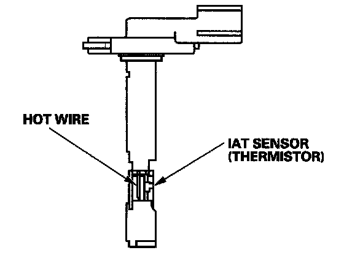

Air Flow Meter/Sensor: Description and Operation

Mass Air Flow (MAF) Sensor/Intake Air Temperature (IAT) Sensor
The mass air flow (MAF) sensor/intake air temperature (IAT) sensor contains a hot wire and a thermistor. It is located in the intake air passage. The resistance of the hot wire and thermistor change due to intake air temperature and air flow. The control circuit in the MAF sensor controls the current to keep the hot wire at a set temperature. The current is converted to voltage in the control circuit, then output to the PCM.